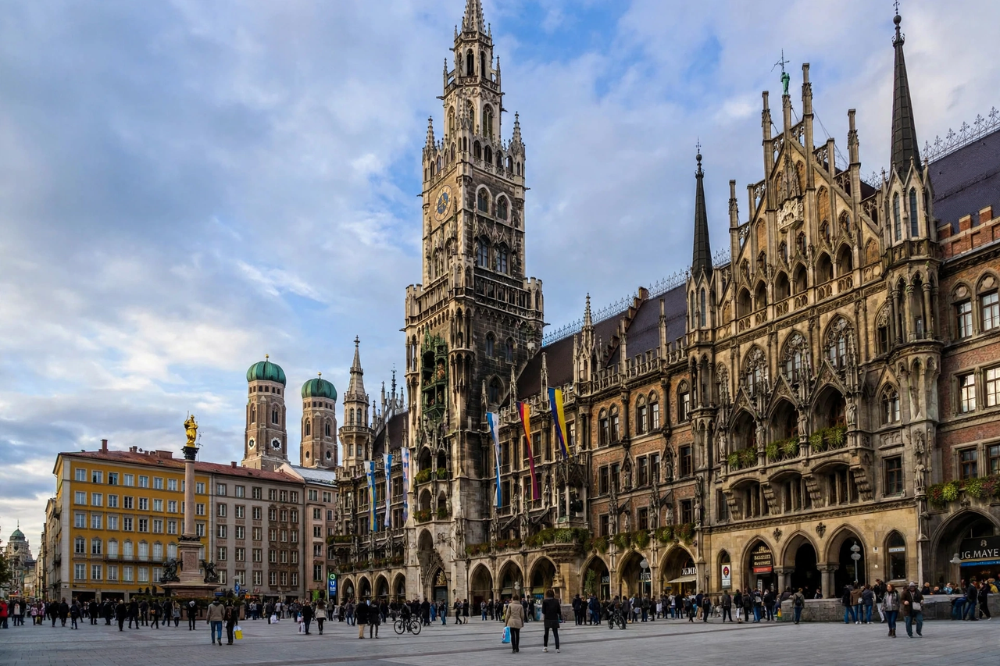

Munich

| Country | Germany |
|---|---|
| State | Bavaria (capital) |
| Founded | 1158 |
| Population | ~1.5 million (city proper) |
| River | Isar |
| Known for | Oktoberfest, BMW, FC Bayern |
Munich (German: München) is the capital and most populous city of the German state of Bavaria, and the third-largest city in Germany after Berlin and Hamburg, with a population of around 1.5 million. It lies on the River Isar, north of the Alps.
History
Munich was founded in 1158 by Henry the Lion, Duke of Saxony and Bavaria, who built a bridge over the Isar near a settlement of Benedictine monks — the city's name derives from "bei den Mönchen" ("by the monks"), and a monk appears on its coat of arms. It became the capital of the Kingdom of Bavaria in 1806. In the 20th century Munich was the birthplace of the Nazi movement — the Beer Hall Putsch failed there in 1923 — and was heavily bombed in the Second World War; the historic centre was subsequently rebuilt. The city hosted the 1972 Summer Olympics, marred by the Munich massacre of Israeli athletes.
Economy and culture
Munich is one of Germany's strongest economic centres, home to BMW, Siemens (founded in Berlin but long centred here), Allianz, and a large insurance, publishing and technology sector. It consistently ranks among the world's most liveable cities.
The city is famous for Oktoberfest, the world's largest beer festival, held since 1810 and attracting around six million visitors annually. Sights include Marienplatz with its Glockenspiel, the Frauenkirche cathedral, the Residenz palace, the Englischer Garten — one of the world's largest urban parks, where surfers ride a standing wave on the Eisbach — and the museums of the Kunstareal. FC Bayern Munich, Germany's most successful football club, plays at the Allianz Arena.